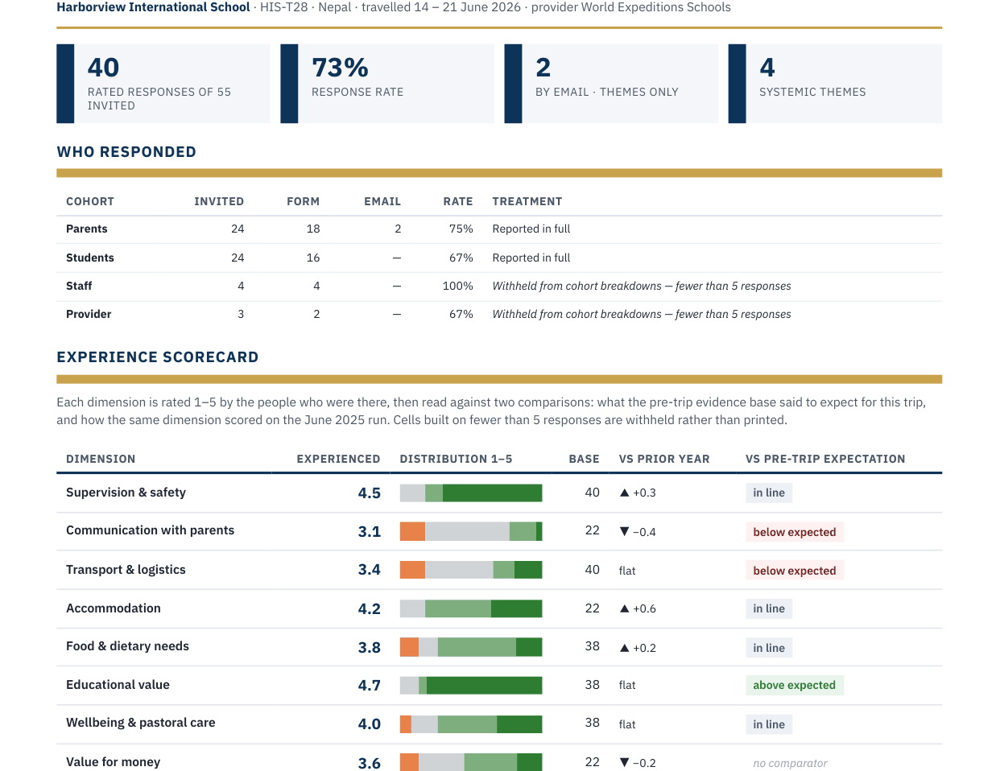

ETI360 brings the post-trip record into one structured report: feedback themes, the operational record, incidents, and follow-up items. The school gets a consistent evidence base for its own review and for planning the next version of the trip — and next season's departure has that file to start from.

ETI360 creates the record and makes patterns visible. The school decides which improvements to adopt.
Send me the itinerary for one upcoming trip. We will prepare its structured trip file at no cost, so you can judge the work using one of your own trips. If your question is a different one, we will work on it with you.
Send an upcoming itinerary